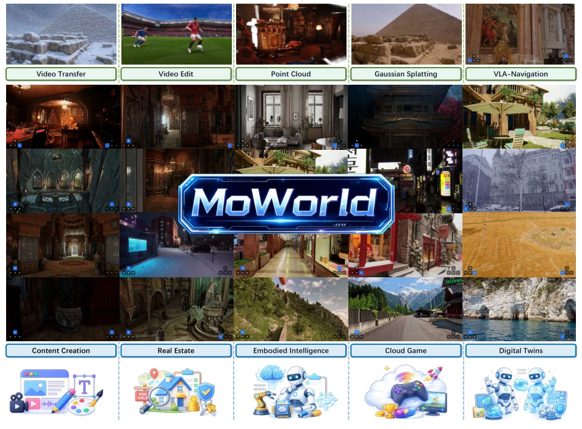
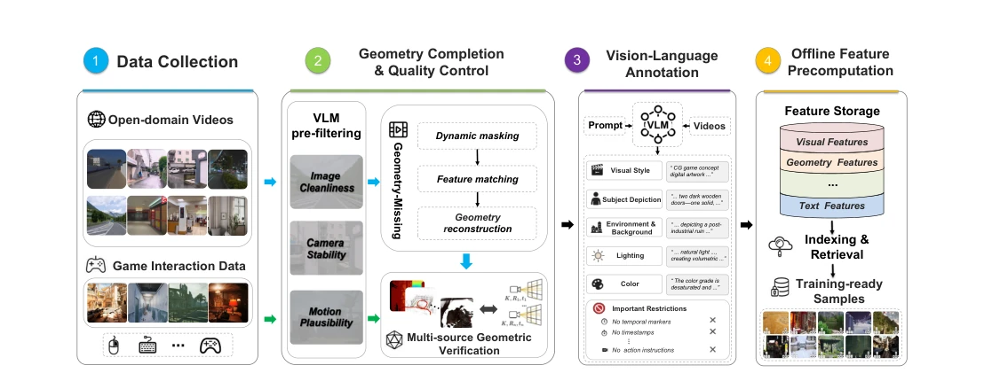
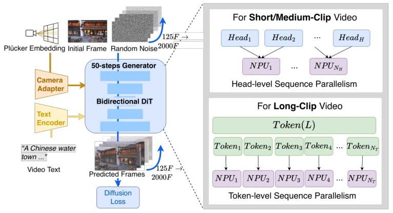
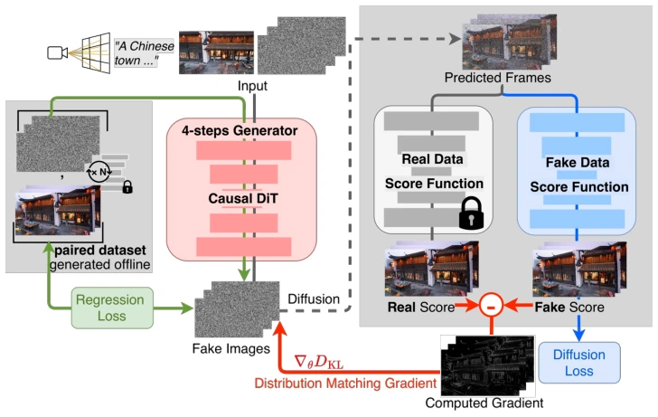
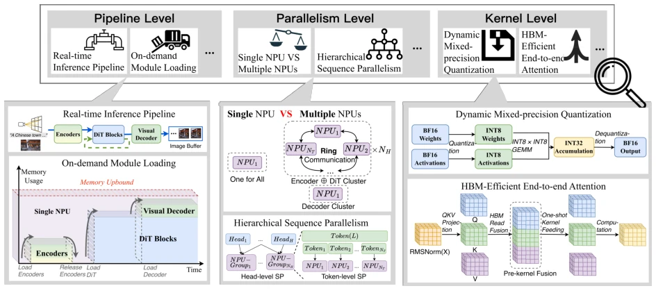
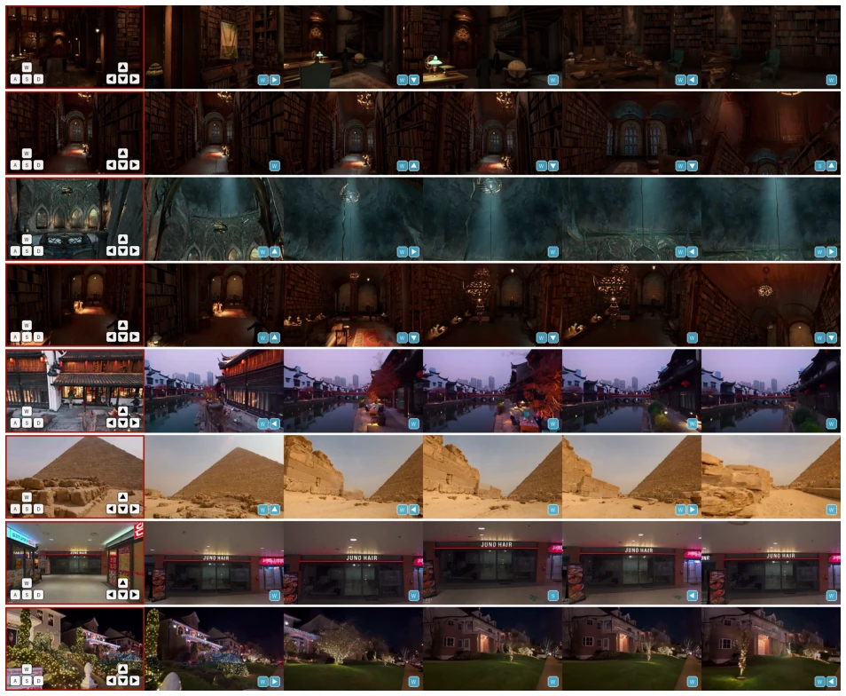
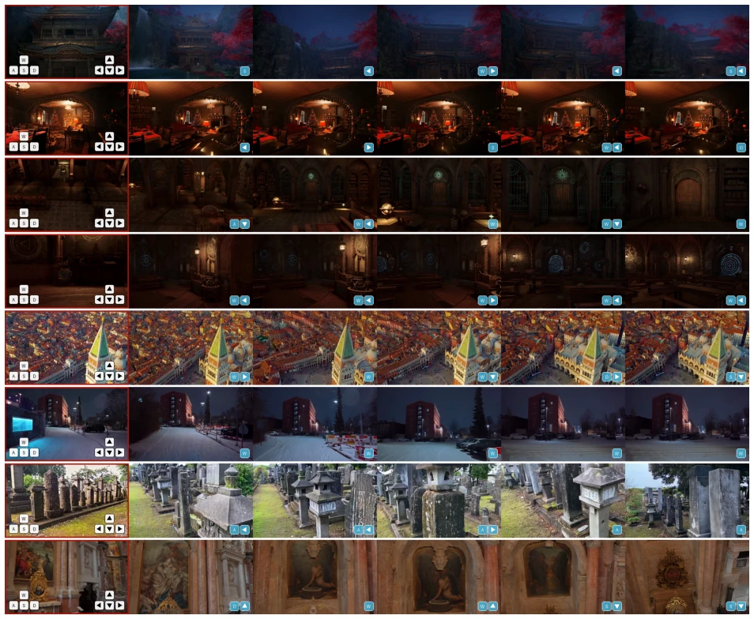
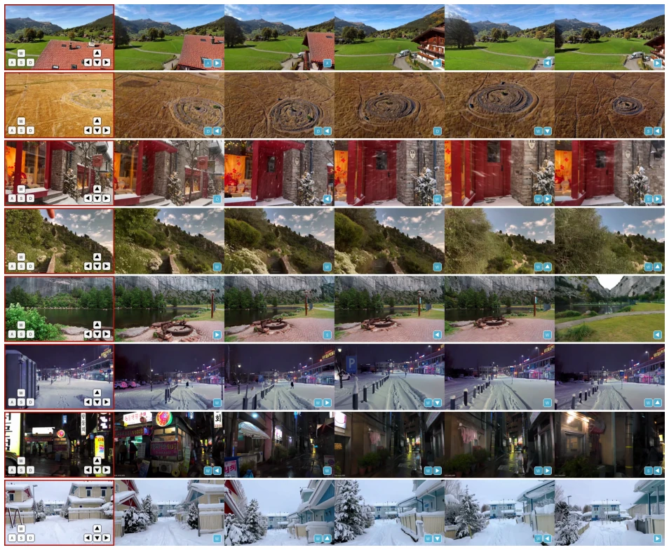
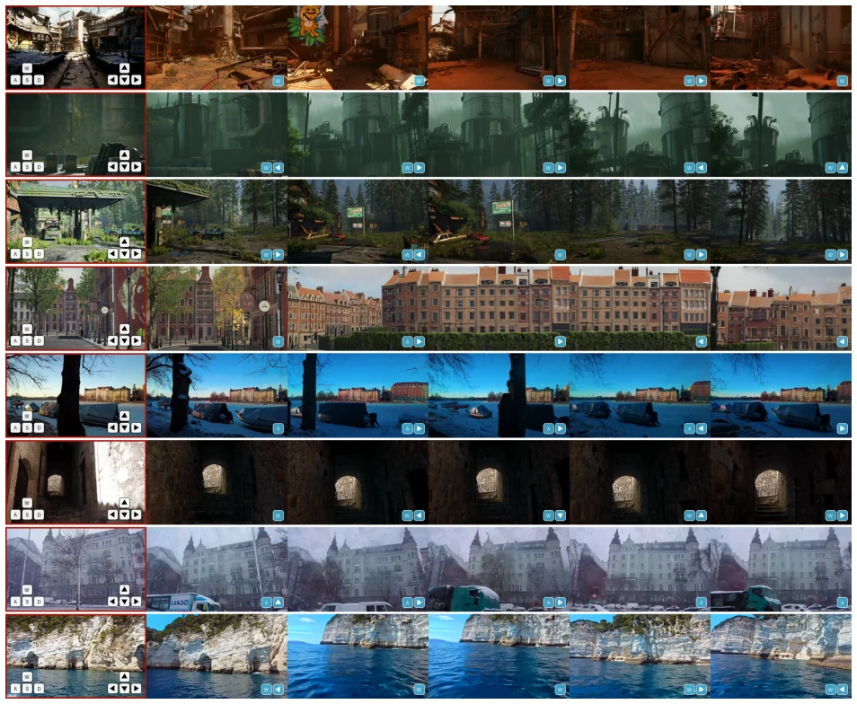
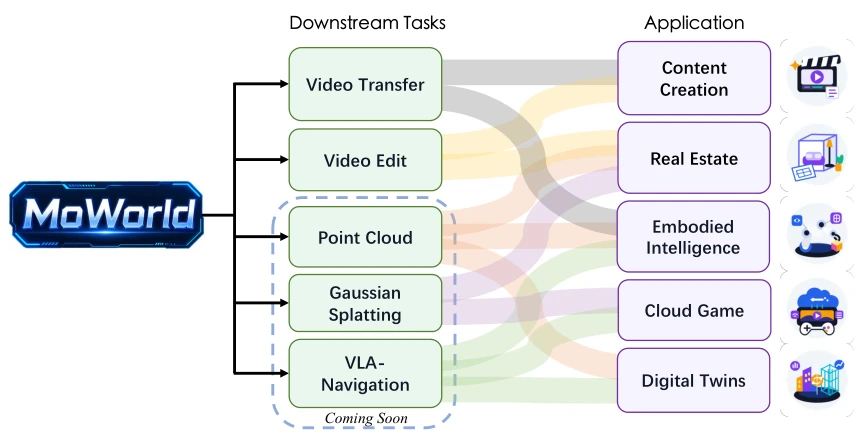

MoWorld claims to be a "Lightning" world model, highlighting 50 FPS real-time interaction; this figure is indeed impressive in the video generation community, yet "Lightning" often implies sacrificing precision. It does not pursue merely stacking parameters, but implements a set of end-to-end optimizations spanning from data to hardware, effectively integrating Diffusion into NPU. However, does achieving 50 FPS on NPU imply maintaining logical consistency in complex physical simulations? The paper does not elaborate on the coupling of the physics engine, focusing more on visual coherence. For embodied intelligence, visual speed does not equate to cognitive speed, yet saving 30%-50% in costs is indeed a tangible benefit. It attempts to demonstrate that world models can not only "see" but also "move", though the generalization capability in real-world deployment requires further validation. Such system-level optimization holds more value than merely topping leaderboards, but whether the "Flash" moniker is well-deserved depends on robustness in practical scenarios.
Existing world models generally suffer from pain points of being "slow" and "expensive". Although foundation models have made significant progress in content understanding, modeling the physical world itself still faces inference efficiency bottlenecks. Existing solutions [24, 25, 38] struggle to meet the low-latency closed-loop control demands of embodied intelligence, where high-frame-rate inference is critical for real-time perception, planning, and control. Additionally, existing data predominantly relies on video-text pairs, lacking geometric consistency, which hinders models from understanding spatial structures. MoWorld aims to address these cost and efficiency issues in practical deployment, enabling world models to move beyond the laboratory and achieve large-scale real-world applications. Particularly for edge devices, the high computational requirements of existing models restrict their implementation.

Figure 1 Overview of MoWorld applications across diverse downstream tasks.
The overall workflow comprises four stages: data engine, pre-training, distillation, and inference. At the data stage, a geometric perception engine is constructed, utilizing a 3D vision pipeline to generate high-quality data featuring camera poses and dense point clouds. Pre-training is based on the Wan2.2 architecture, injecting camera control signals (Plücker coordinates), employing curriculum learning to expand from short sequences to 2000-frame long sequences, and optimizing via sequence parallelism (SP) on NPU clusters. The distillation stage introduces autoregressive (AR) Flow Matching, designing a historical context selection module (Latent Frames rather than KV Cache) to reduce memory usage, and compresses sampling steps through Self-Forcing distillation, encompassing Fake Phase and Student Phase. The inference stage performs operator-level optimization targeting NPU, including dynamic mixed-precision quantization and end-to-end Attention fusion, achieving low latency.

Figure 2 Overview of the MoWorld data engine. Multi-source videos are converted into training-ready samples through geometry completion, data quality control, vision-language model annotation, and precomputed caching.

Figure 3 In MoWorld pretraining stage, a Wan2.2 MoE video foundation model is trained on NPU clusters with sequence parallelism (SP), distributing attention heads or input tokens across devices for scalable long-sequence learning. The model is jointly conditioned on the initial frame, text, and camera geometry, enabling progressive scaling of video generation from 125 to 2000 frames. N: number of NPU groups at different stages, with (NH ≪NT ).

Figure 4 In MoWorld distillation stage, a unified latent-space distillation objective is applied to compress inference steps from 50 to 4, while reformulating the bidirectional DiT architecture into a self-driven causal DiT for efficient autoregressive generation.

Figure 5 An overview of low-memory, low-latency real-time inference via pipeline-, parallelism-, and kernel-level optimizations.
Evaluation is conducted on the VBench-I2V benchmark and internet-collected samples. Metrics include Subject Consistency (SC), Background Consistency (BC), Motion Smoothness (MS), etc. Results indicate that MoWorld leads in Quality and Average scores, performing particularly well on I2V-S and I2V-B, demonstrating its ability to retain first-frame information. Compared against CameraCtrl, SEVA, and Lingbot, MoWorld achieves the best or second-best performance across all metrics. Qualitative results showcase camera control capabilities in both indoor and outdoor scenarios. Inference speed reaches 50 FPS on NPU, with costs reduced by 30%-50%. Ablation studies are not detailed, but emphasize the effectiveness of curriculum training and distillation strategies.

Figure 7 Qualitative results.

Figure 8 Qualitative results.

Figure 9 Qualitative results.

Figure 10 Qualitative results.
其他图片Other Figures

Figure 11 Downstream tasks and applications of MoWorld. MoWorld organizes generated dynamic scenes into five representative downstream tasks, which further support diverse application scenarios such as content creation, real estate visualization, embodied intelligence, cloud gaming, and digital twins.